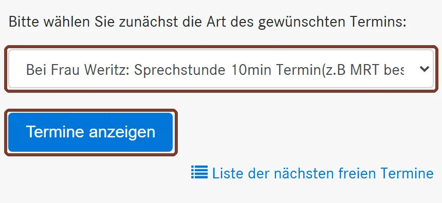
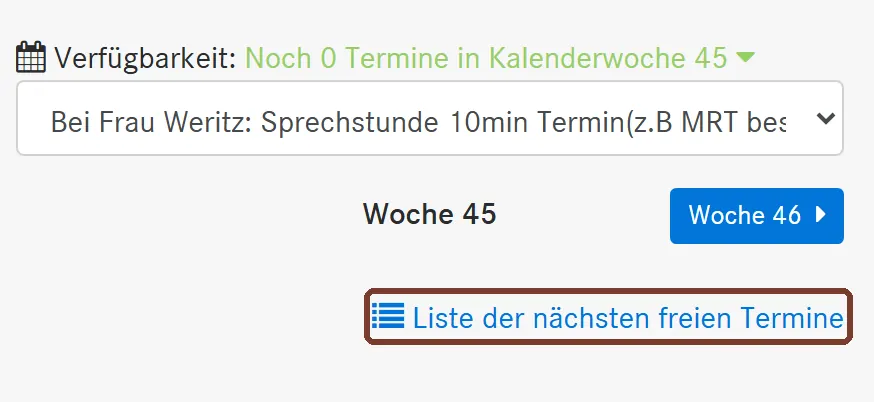
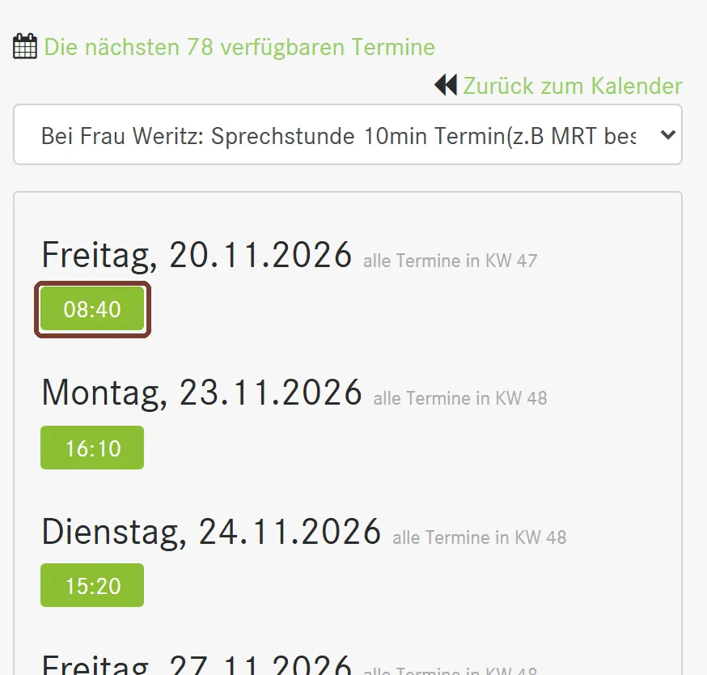
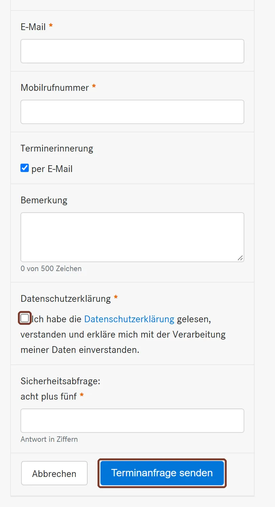
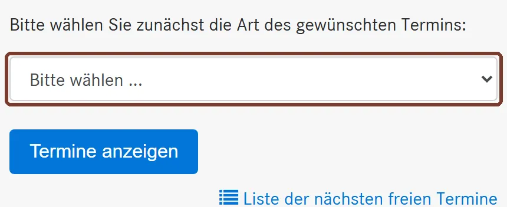
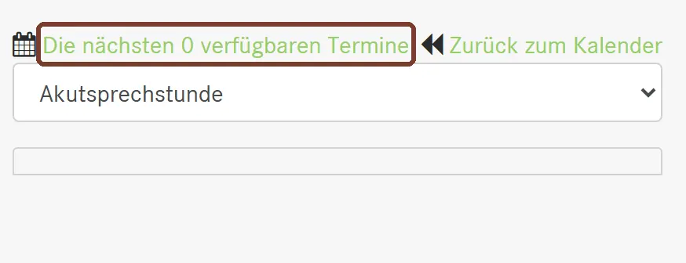

Online einen Termin buchen
Der Kalender heißt DocVisit und ist für Patientinnen und Patienten der Praxis. Jeder Standort hat einen eigenen Kalender, deshalb fragen wir zuerst, bei wem Sie Patient sind. Neu in der Praxis?
Bitte wählen Sie oben Ihre Ärztin oder Ihren Arzt, dann erscheint Ihre Anleitung.
Für Dr. Grützner gibt es im Kalender keine eigene Terminart. Bitte rufen Sie an: 02556 9396-0. Online können Sie stattdessen bei Frau Weritz oder Frau Schön buchen:
Erst ganz lesen. Der Knopf öffnet ein neues Fenster. Diese Anleitung bleibt offen.
Kalender öffnen
Terminart wählen
Tippen Sie auf das Feld „Bitte wählen“ und wählen Sie:
Bei Frau Weritz oder Frau Schön: Sprechstunde 10min Termin. Das ist für kurze Anliegen, zum Beispiel Gelenkbeschwerden oder ein MRT besprechen.
Infektsprechstunde, bei Husten, Schnupfen, Fieber oder Magen-Darm-Infekt. Bitte bringen Sie eine Maske mit.
Bei Frau Weritz: Check o. Patientenverfügung. Buchen Sie danach einen zweiten Termin eine Woche vorher: Labortermine nur für geplante Checkuntersuchungen.
Impfungen (FSME, MMR etc.). Schreiben Sie unter „Bemerkung“, welche Impfung Sie möchten.
Sonderimpftage: Grippeimpfung/Coronaimpfung. Privatversicherte brauchen für die Grippeimpfung vorab ein Rezept aus der Praxis.
Bei Frau Schön: Kindervorsorgeuntersuchungen U3-U11, J1, J2, GU.
Tippen Sie dann auf Termine anzeigen.

Beispielansicht vom 02.11.2026, Markierung ergänzt Freien Termin finden
Sie sehen zuerst die aktuelle Woche. Steht dort „Noch 0 Termine“, ist in dieser Woche nichts frei. Das ist normal. Tippen Sie unten auf Liste der nächsten freien Termine.
Freie Termine können einige Wochen entfernt sein. Am 02.11. war die nächste Sprechstunde bei Frau Weritz am 20.11. und bei Frau Schön am 26.11. Wenn Sie krank sind, wählen Sie die Infektsprechstunde oder rufen Sie an.

Beispielansicht vom 02.11.2026, Markierung ergänzt Uhrzeit antippen
Die Liste zeigt die nächsten freien Tage. Tippen Sie auf die grüne Uhrzeit, die Ihnen passt.

Beispielansicht vom 02.11.2026, Markierung ergänzt Daten eintragen und senden
Pflicht sind Anrede, Vorname, Nachname, Geburtsdatum, E-Mail und Mobilnummer. Ohne E-Mail oder Handy klappt die Buchung nicht, dann rufen Sie bitte an.
Setzen Sie den Haken bei der Datenschutzerklärung, lösen Sie die kleine Rechenaufgabe und tippen Sie auf Terminanfrage senden. Bitte denken Sie zum Termin an Ihre Versichertenkarte.

Beispielansicht vom 02.11.2026, Markierung ergänzt
Für Impfungen brauchen Sie am Schilden derzeit keinen Termin. Kommen Sie während der Öffnungszeiten und bringen Sie Impfausweis und Versichertenkarte mit. Reiseimpfungen sprechen Sie bitte vorher ab: 02556 278.
Bei milden Infekten ist eine telefonische Krankschreibung möglich. Bitte rufen Sie an: 02556 278.
Im Online-Kalender gibt es am Schilden nur die Akut- und die Infektsprechstunde. Andere Termine vereinbaren Sie bitte telefonisch: 02556 278.
Erst ganz lesen. Der Knopf öffnet ein neues Fenster. Diese Anleitung bleibt offen.
Kalender öffnen
Terminart wählen
Wählen Sie Akutsprechstunde. Die Termine dauern höchstens 10 Minuten und sind für kurze Anliegen wie Rückenschmerzen.
Wählen Sie Infektsprechstunde, bei grippalen Symptomen oder Magen-Darm-Infekt. Bitte kommen Sie mit Maske.
Eine Arztwahl gibt es hier nicht. Tippen Sie auf Termine anzeigen.

Beispielansicht vom 02.11.2026, Markierung ergänzt Wenn kein Termin frei ist
Am 02.11. standen dort „Die nächsten 0 verfügbaren Termine“. Sehen Sie das auch, ist online gerade nichts frei. Rufen Sie dann bitte an: 02556 278.

Beispielansicht vom 02.11.2026, Markierung ergänzt Termin wählen und senden
Sind Uhrzeiten zu sehen, tippen Sie auf eine davon, tragen Ihre Daten ein und senden die Anfrage ab. Bitte denken Sie an Ihre Versichertenkarte.